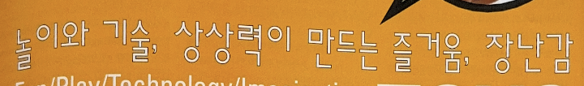

Sandoll60
산돌 60은 산돌의 탈네모꼴 폰트 중에서
가장 먼저, 그리고 널리 사용되고 있는
조합형 서체이다.
글자 폭이 글자의 구조적인 특징에 따라
적절하게 주어지므로 한 글자 내의
시각적 밀도를 근본적으로 해결할 수 있는
방식으로 제작된 서체이다.
출시년도:1987
스펙:한글 11,172자 / 라틴 95자 / 부호 2,268자
세로쓰기 197자